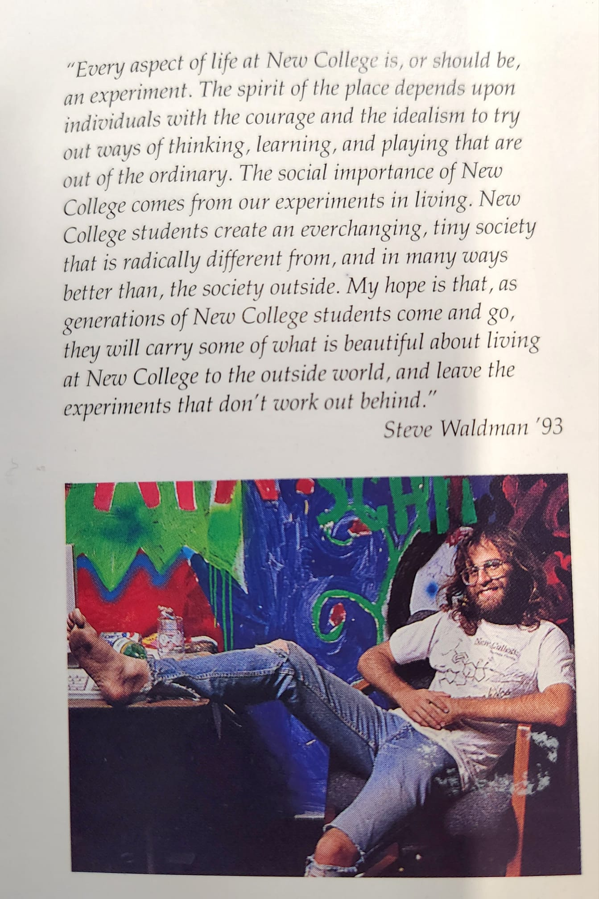

After you’re dead, do you care if it’s the end of the world?
New College is my goto metaphor when I contemplate death. You wonder what it will be like, all of life is this vivid stream of experience, and then all of a sudden it's just... gone?
The high-school drama cliché play "Our Town" always brings me to tears. In the play, a town's graveyard becomes a kind of a greek chorus or MST3K riff. The dead once set there become spectators, chatting about the antics of the living. Only, over time, they become ever more forgetful and indifferent. The living world begins, when you are among the living, as an object of such intensity and care. You cannot help but feel pain, excitement, love, annoyance, hatred, hope, disappointment, triumph, anxiety, joy. The living world draws from you such attention. But time comes. Eventually it washes away all of your attention, all of your care.
When I think of death I think of New College because the difference between life there and life after was a difference in kind like that. It was not (like physical death only sometimes is) a sharp transition. You graduate, you move away. You still know some people, keep in touch. But eventually it occurs to you that your ever less frequent chatter is like the gossiping among denizens of Thornton Wilder's cemetary.
When I wonder how it will be to be dead, this is what I think. Experience is irredicible, axiomatic, beyond explanation or science. Whatever I am that experiences will in some indeterminate sense continue to experience.
But care, care is contingent and fragile, an equilibrium balanced on the tip of a single strand of hair, at the mercy of an indifferent physics. Care depends upon memory, also fragile. I think I won't remember, just like now I can hardly remember the stream of years of days — rapids rather than a babbling brook — that was my time at New College.
When I was at New College, I was a New College nationalist. There were politics then and now, and I realized, standing one day in Palm Court, that I would die for New College, for that place, that community, if that were somehow called for. I was probably twenty years old, and I understood quite self-consciously how ridiculous this would seem to, well, almost everybody. New College, after all, is just a college. It is a means to an end. It is preparing us, the story goes, for something greater, for our productive adult lives.
I knew that's how the world would think. But the world is full of idiots. I remembered life before New College and I knew, quite correctly, that life afterwards was more likely to be banal than something greater just because now I would have a degree and skillz.
New College was a stab at utopia. A stab. Life at New College was sharp and often painful. But we together flew closer to the sun than I would ever fly before or since. The purpose of New College wasn't to prepare us for the next thing, but for us to live together more richly and more fully, intellectually and otherwise, than would ever be possible in the world surrounding us. If the institution had a role to play in the larger world, it was not to produce more Fulbright Scholars and doctoral students, better US News rankings. That might be a kind of cover story, the justification for our funding, whatever. Our role was to experience an intensity of conviviality that our society can no longer remember or sustain, and carry some spark of that memory, some fading ember, when the academic cycle cast us out like dandelion seeds, like balooning spiderlings. Perhaps something from the experience would be left in our venom. I hope, dear reader, somewhere in all these words I've written, now and over 16 years, just a little bit of that poison has found you.
Ron DeSantis is trying to transform New College into Hillsdale College or whatever. He's an asteroid hitting a planet, pulled by some political gravity, stupid and indifferent to what he is destroying. New College is not just some "liberal arts college" that is woke or left-wing. It's a liberal arts college like Dr. Who's mode of transport was a telephone booth. Yes, sure, but perhaps also a bit more than that.
I cannot speak to how "woke" New College has or hasn't become. I've been dead — I'm sorry, graduated — almost thirty years. But I suspect there is some continuity, between whatever thrives now on that sunny little campus and the experiment in living I was once a part of.
The dead forget so much and care so little. Time scatters and numbs us. Yet, whether the fact is hopeful or it is tragic, it turns out the dead do still care about the end of the world. We can feel just that much pain.
Postscript:
Here is me circa 1993, from some marketing thing produced then by the college. Thanks Alice Abarca for having unearthed it. The shirt, which Camilla Mortensen and I screened with Gary Jurman's help, fits surprisingly into contemporary court cases and culture wars. But to pay much attention to that misses every meaningful point.
2023-02-27 @ 11:55 PM EST